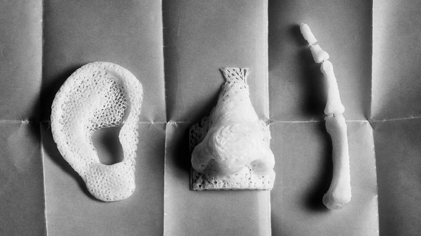
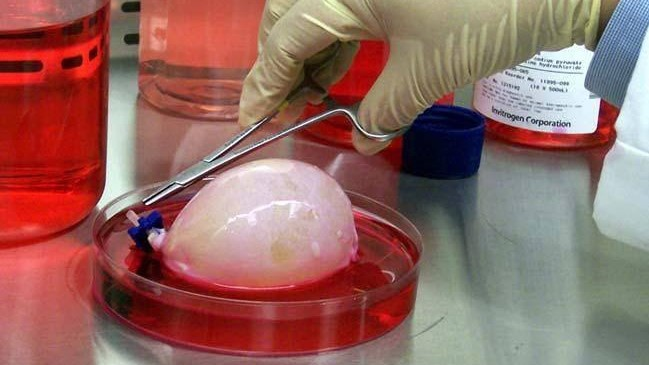

Медицина стала одной из первых отраслей, которая решила использовать потенциал 3D-принтеров в практических целях. Двигаясь от простого к сложному, ведущие медики подбирали способы внедрения аддитивной печати во врачебное дело.Создатели 3D-принтеров также не стояли на месте, разрабатывая материалы, идеально подходящие для печати зубных имплантатов, протезов, прототипов человеческих органов и даже нашли способ печати биологическим материалом.В наше время трехмерная печать используется практически во всех отраслях медицины: стоматологии, протезировании, хирургии и микрохирургии глаза, гинекологии и многих других.

3D-моделирование в медицине
3D-моделирование в медицине позволяет создавать объемные модели. Технология нашла применение в эстетической стоматологии, онкологии, отоларингологии и других сферах. Трехмерные модели, напечатанные на основе аддитивных технологий вкупе с компьютерной томографией, стали одним из незаменимых достижений в области медицины. Трехмерные снимки больных органов трансформируются в картинку с высоким качеством, а затем преобразуются в 3D-модели.Моделирование дает возможность максимально качественно подготовиться к проведению операции и изучить особенности болезни. Например, при подготовке к операции по удалению опухоли врачи тщательно изучают размеры, форму, очертания новообразования в трехмерном измерении, чтобы понять, какую тактику выбрать во время операции.
Подготовка к операциям с помощью 3D-моделирования проводится по следующему алгоритму:
1)сканирование нужного органа/опухоли;
2)создание программой трехмерного изображения;
3)печать прототипа;
4)изучение модели;
5)выбор методики лечения или операции.
Таким образом, современные 3D-принтеры помогают врачам надлежащим образом подготовиться к проведению операции. Разумеется, технология применяется и в других сферах медицины, но мы решили сделать акцент именно на онкологии, чтобы продемонстрировать, какую неоценимую помощь могут оказать 3D-принтеры в спасении жизней.
Технологии выращивания органов и тканей
Современные технологии дали возможность осуществлять трехмерную печать клеток, биосовместимых материалов и их вспомогательных компонентов с целью дальнейшего создания полнофункциональных живых тканей на их основе. Технология получила название 3D-биопечати, которая нашла свое применение в регенеративной медицине и существенно упростила и удешевила процесс трансплантации жизненно важных тканей и органов.
Биоинженер Томас Боланд в Университете Клемсона в Южной Каролине (США) самостоятельно переделал принтеры Lexmark и HP, чтобы попробовать напечатать фрагменты ДНК человека. Исследование показало, что размер клеток ДНК аналогичен размерам капли стандартных чернил и составляет около 10 микрон. Дальнейшие эксперименты показали, что 90 % клеток сохраняют жизнеспособность в процессе биопечати. В 2003 году ученый запатентовал биопечать, первая успешная печать произошла в 2006 году.
Первый удачный эксперимент по трехмерной печати человеческих органов произошел в 2006 году. Ученые из Wake Forest Institute for Regenerative Medicine спроектировали и распечатали семь мочевых пузырей для пациентов-добровольцев.

Ученые-биоинженеры взяли за основу стволовые клетки пациентов, с помощью которых и были напечатаны будущие органы. Образцы ткани доноров, хранящиеся в специальной герметичной камере, экструдером наносили поверх 3D-макета мочевого пузыря, подогретого до естественной температуры тела человека.
Результаты: спустя восемь недель в ходе интенсивного роста клетки начали делиться и воссоздали мочевой пузырь.В зависимости от выбранного 3D-принтера донорский материал дозированно подается из диспенсера. Данный подход используется для печати мягких тканей, обладающих низкой плотностью клеток. Например, при печати отрезков кожи или мягких хрящей. Метод послойного наплавления применяется при печати костных имплантатов.